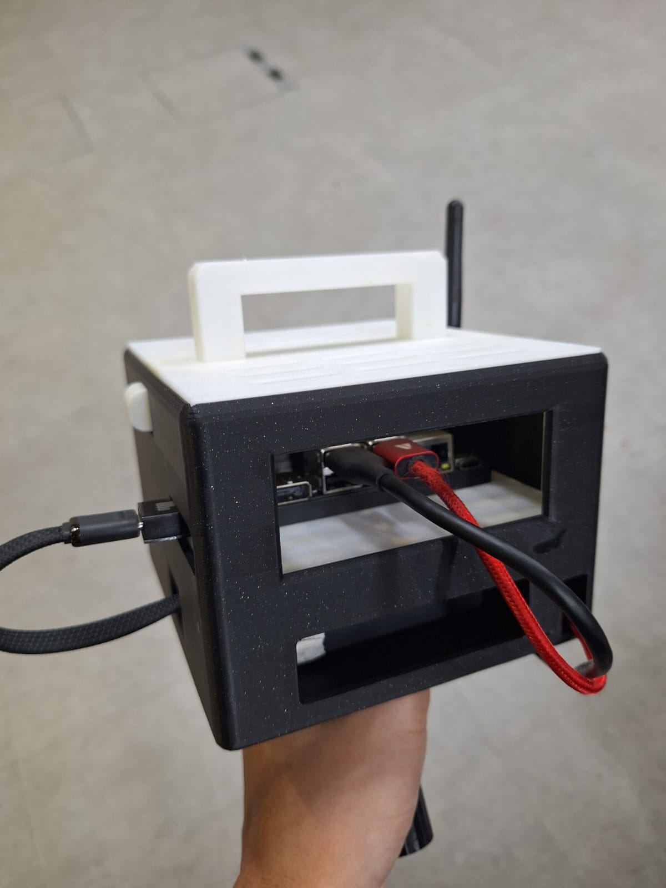
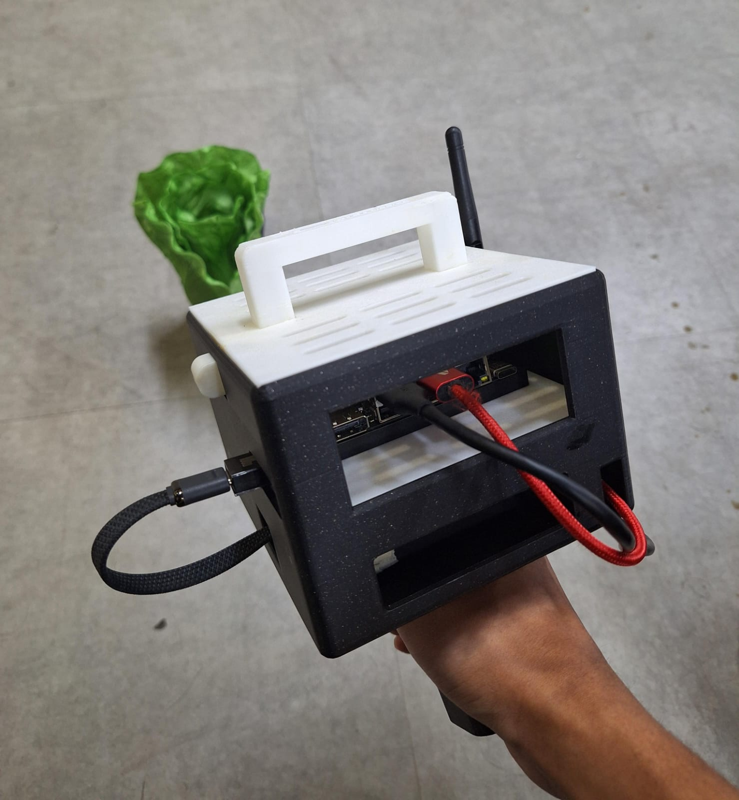
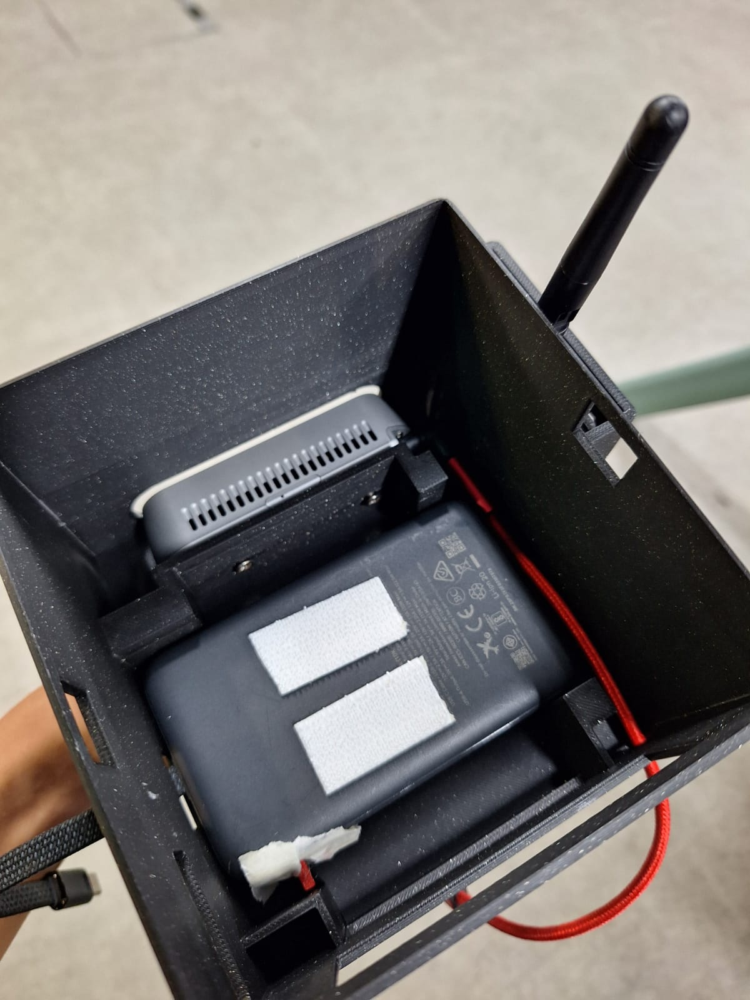
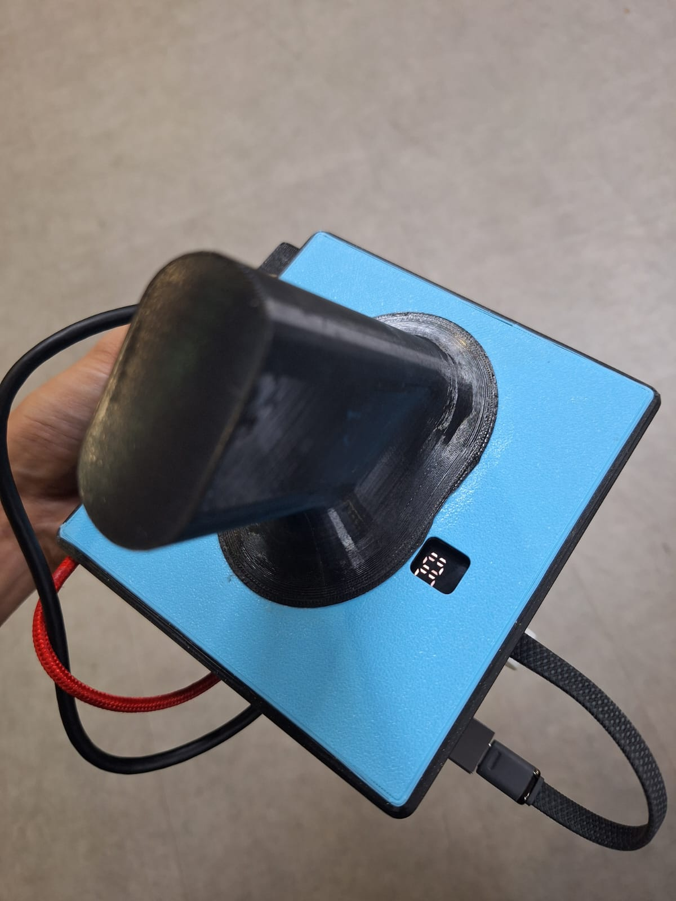
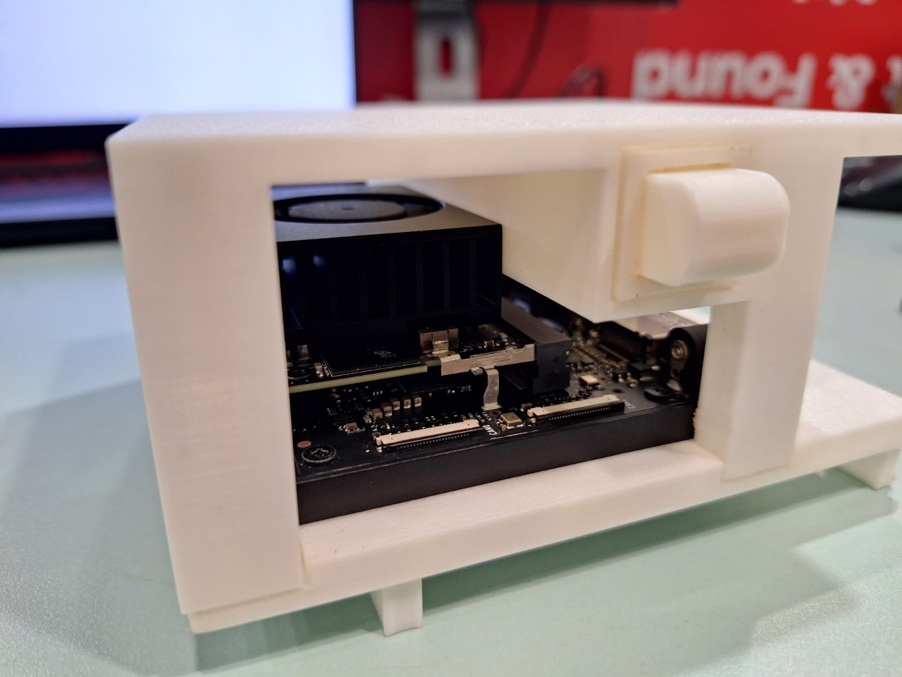
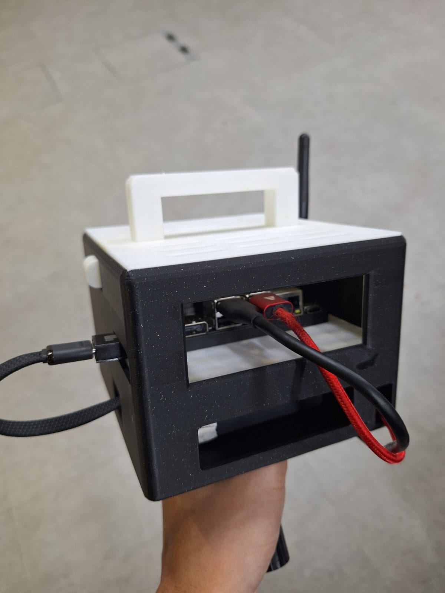
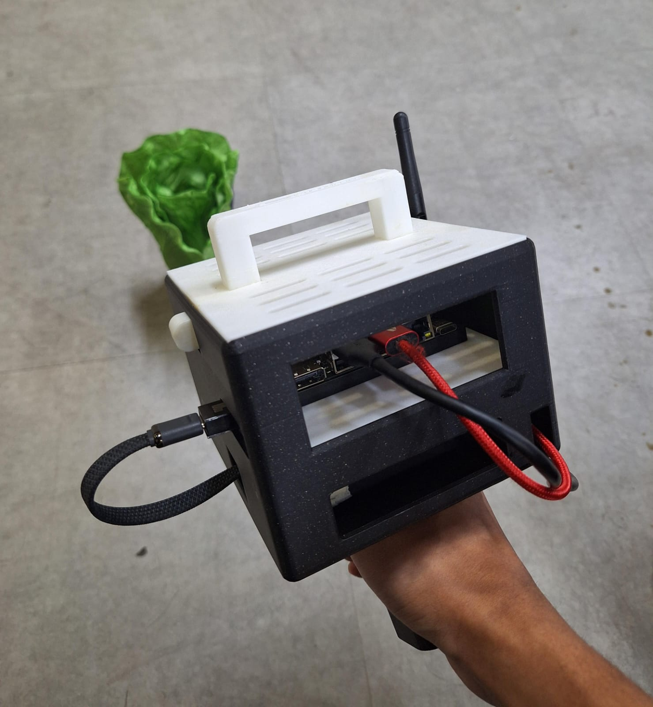
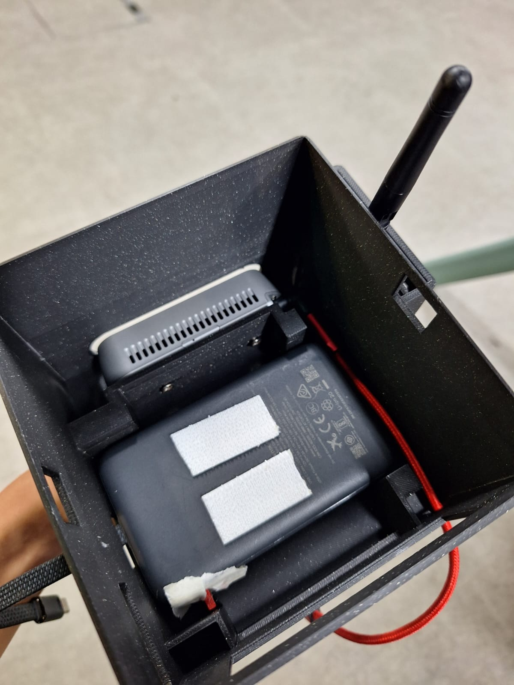
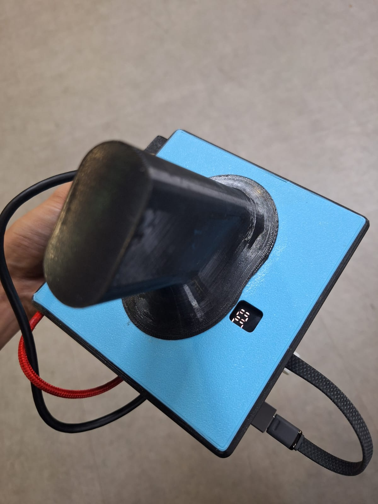
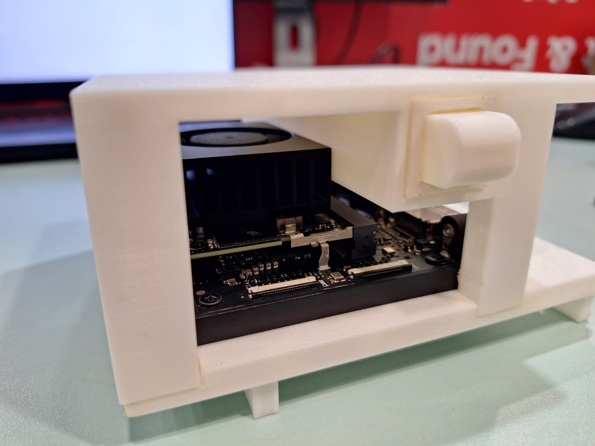

Hand-held Scanner
Our All-in-one hand-held Scanner allows quick and easy collection of information in various use cases.
Hardware Specifications
Jetson Nano Orin
High-performance edge AI computing module for real-time vision and autonomous field applications. Delivers powerful on-device AI processing while maintaining low power consumption
Key Features:
- High AI performance (up to ~40 TOPS) for real-time inference
- Low power operation (7–15 W) suitable for portable systems
- 6-core ARM CPU for efficient multitasking
- Supports CUDA, TensorRT, PyTorch, and JetPack SDK
- Multiple I/O options for cameras, sensors, and peripherals
- Compact form factor for embedded and handheld deployments
Intel RealSense D435i
Precision depth-sensing camera suitable for plant scanning in vertical farming environments. Provides real-time 3D and motion data, enabling accurate capture of plant sizes and features
- Wide field of view for comprehensive plant capture
- High-resolution depth sensing for detailed 3D data
- Fast frame rates for smooth scanning while moving
- USB-powered and compatible with common development platforms
- Robust and lightweight for handheld use
- Strong software support with RealSense SDK for depth processing and integration
Anker Zolo Power Bank
Reliable portable power solution for extended field operations. The Anker Zolo Power Bank provides consistent, high-capacity charging to keep your scanner running throughout long work sessions in the field.
Key Features:
- High-capacity battery for all-day scanning
- Fast charging support for quick turnaround
- Multiple USB ports for simultaneous device charging
- Compact and lightweight design
- Durable construction for farm environments
- LED power indicator for battery status monitoring
UWB Positioning System
Complete ultra-wideband positioning system for precise real-time location tracking in vertical farming environments. The system includes multiple anchor nodes and mobile tags that work together to provide centimeter-level accuracy for seamless plant identification and farm mapping.
Key Features:
- ±20cm positioning accuracy using trilateration technology
- Multiple anchor nodes (3+) for comprehensive coverage
- Real-time distance measurements and position calculation
- Linktrack P-8 hardware compatibility
- Wireless communication between tags and anchors
- Configurable farm layout with visual anchor positioning
- Seamless integration with Harvester II software
- Low latency tracking for smooth scanning operations
Software Overview
Professional Harvester II interface with AI-powered plant detection, real-time monitoring, and comprehensive farm analytics.
Secure Login Portal
Professional authentication system with email-based login and password recovery for secure access to your farm management system.
AeriaLab Control Center
Central dashboard showing system health, active applications, and production facility status with 24/7 monitoring capabilities.
Applications Hub
Launch and manage all your farm tools including Harvester II, Analytics Center, Layout Designer, and Task Manager from one unified interface.
AI-Powered Scanning Interface
Live camera feed with real-time system metrics, performance graphs showing FPS and CPU usage, and comprehensive sidebar controls for farm management.
Professional Camera Tools
Advanced camera controls including snapshot, zoom, UWB positioning, grid overlay, recording, markers, fullscreen, debug mode, and quick notes.
Farm Map & Location Tracking
Interactive farm layout with UWB anchor positions, real-time distance measurements from anchors, and precise scanner position tracking (±20cm accuracy).
Advanced Detection Settings
Fine-tune YOLO detection parameters with preset modes (Fast Scan, Balanced, High Precision), species-specific confidence thresholds, and customizable ripeness criteria.
Farm Statistics Overview
Key insights including total plants, median age, health metrics, ripeness tracking, and species breakdown with Chart.js visualizations.
Analytics Center
Comprehensive analytics with health scores, average age tracking, harvest predictions, species distribution, age distribution charts, and tomato ripeness monitoring.
Post Harvest Management
Review plants ready for harvest with captured images, age tracking, planting dates, and health status. Mark plants as harvested with one click.
Daily Task Management
Organize farm operations with task lists showing priority levels (HIGH/NORMAL/LOW), plant assignments, due dates, and automatic harvest task generation.
Multi-User Administration
Create and manage team members with role-based access (Admin, Manager, Worker), password reset capabilities, and user deletion controls.
Need More Information?
Have questions about our hand-held scanner? Want to see it in action or discuss how it can fit into your vertical farming operation?
We're here to help! Arrange a live demo or get your questions answered through our contact form.
Contact Us